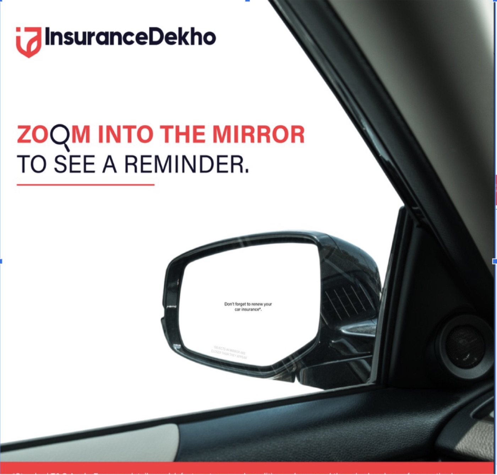
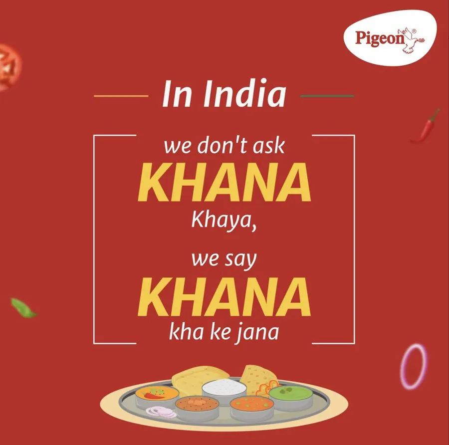
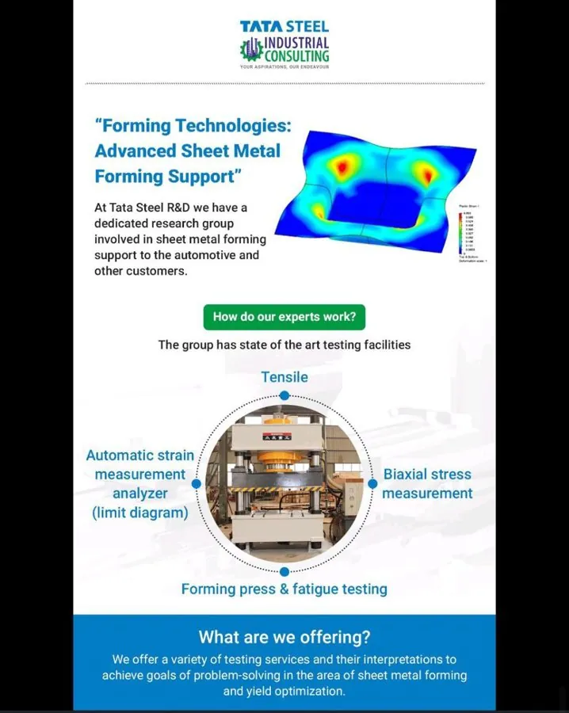
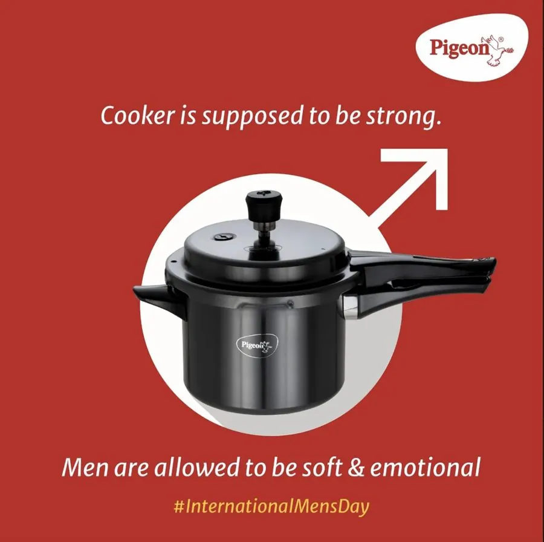
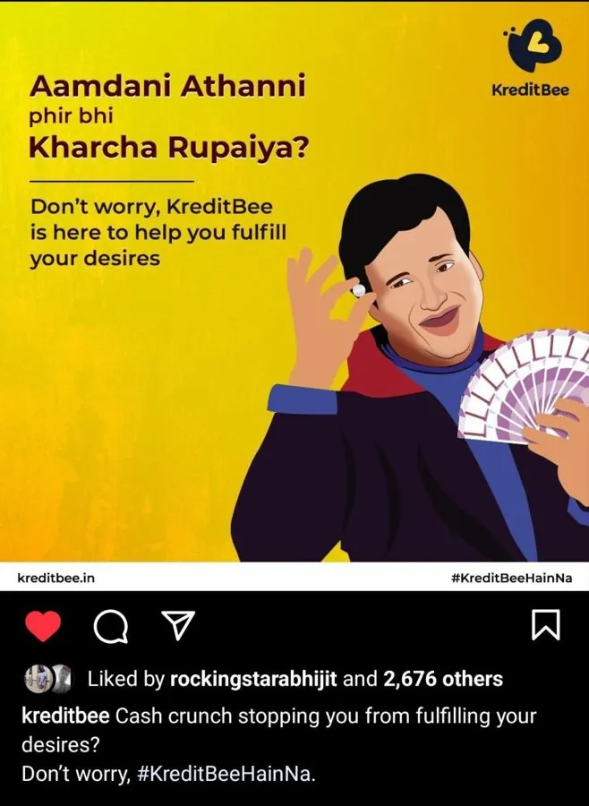
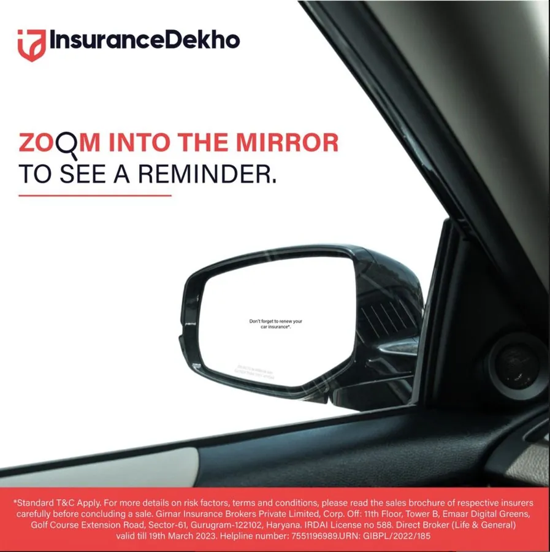
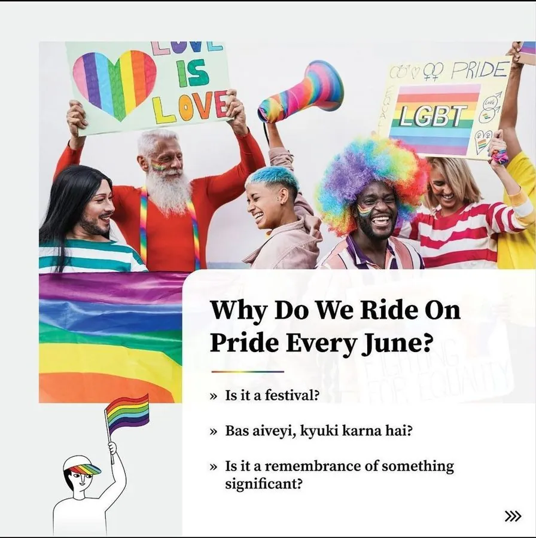
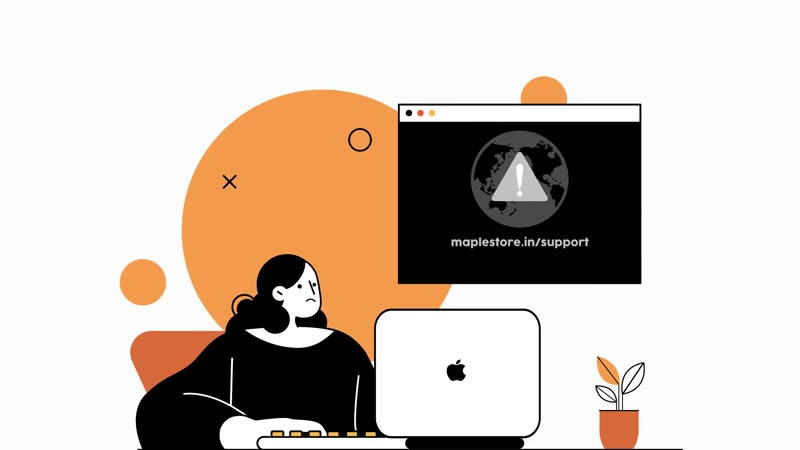

to confirmConfirm: photo supplied.




Oct 2023 – Jan 2024

The chase starts here.
Amita Dongre
Nobody wakes up wanting to read an ad.
So I start with what people already believe — and say it back to them well enough that they forward it.
Insurance. Cookware. Steel. Sunscreen. Whisky. Wealth. Same question every time: what’s the human line under the brief?
Six episodes 2018–2026 BFSI FMCG Skincare Hospitality B2B Founder voice
Every brief is a chase
Every brand has a business goal it can’t say out loud.
The brief is never the problem. What the brief left out is.
So I go find that first.
Then I make the thing that says it.
Campaign lines. Content calendars. Video scripts. Strategy documents. A founder’s LinkedIn.
Sometimes all six for the same client.
One decision per piece, and I’ll show you the decision.
What we chose. What we killed. What the client sent back.
The work is downstream of that.
My Works
Six cases. Each one carries the same six labels.
Johnnie Walker Refreshing Mixer — Revibe Summer Sessions
A mixer can’t post its way into a Saturday night. It has to be the Saturday night. The brief wasn’t an ad. It was three cities, three dates, and people who had to actually show up.

InsuranceDekho — #BharosaKarKeDekho
Nobody wakes up wanting to think about insurance. It’s the one thing you buy hoping you never use it. So the feed was full of posts nobody had a reason to stop for.
Bioderma — seven months on retainer
Skincare social has two failure modes. Either it’s a product shot with a claim on it, or it’s a science lecture. Both get scrolled. The brand needed posts that taught something and still looked like the brand.
Strategy, not just posts
Two clients, same request: give us posts. Neither had a reason for anyone to follow them. A calendar can’t fix that. You have to decide what the brand is for first.
A founder’s LinkedIn, in her own voice
Founders on LinkedIn tend to sound like their own brochure. The brand account can do that. The person can’t — the whole value of a founder’s post is that a brand couldn’t have written it.
Hinglish that sells
Two categories nobody brings up at a party: a pressure cooker and a loan app. Both were posting product features into a feed that only rewards recognition.
Also — the strip

Pride & PumpkinWrote a section of the agency’s Pride magazine: the LGBTQIA+ workplace questions colleagues are scared to ask, plus a carousel explaining Section 377’s history. to confirmConfirm: replace the bit.ly link with a canonical URL or a hosted PDF. A diagnostic centre’s growth planMarket sizing, a four-tier competitive analysis and a business model canvas, for a radiology clinic. Written, not designed. The deck stays private. Four languages, four scriptsFive customer-testimonial films in English, Hindi, Marathi and Gujarati. Not one script translated four times: different protagonists, different reasons to shop, and an Agenda and Focus line stated under each. A tea brand’s website, page by pageA site framework before a single line of copy: what each page is for, filtering logic, hover states, where the certifications sit. Where it startedDecember 2018, writing to daily deadlines: 100+ articles across 60+ brands in one quarter, inside an editorial system with writer IDs, editor initials and word-count specs. The writing was early-career. The discipline is the point. None of it is shown here.
MapleA 75-second performance ad, problem to product, for an Apple reseller. My part: wrote the script. to confirmConfirm: Maple script authorship.About me
to confirm
to confirm
Photo slots: colour portrait of Amita Dongre — to confirm photo supplied.
I’m from Indore.
Mumbai came next: agency side, at TeamPumpkin, 2021 to 2023.
Retainers, not gigs.
Not a career change — a modifier.
I’m from Indore. I started freelancing in December 2018 — coupon articles, daily deadlines, an editor’s initials in every filename. Nobody’s showreel starts there. Mine did, and it taught me to file on time, which turns out to be half the job.
Mumbai came next: agency side, at TeamPumpkin, 2021 to 2023. Insurance, cookware, lending, steel. That’s where I learned to write for a category that doesn’t want to be written about.
Since 2023 I’ve run my own freelance practice — retainers, not gigs. Skincare, luxury, jewellery, tea, restaurants, a psychotherapist’s brochure, a diagnostic centre’s growth plan.
Now I’m at Eventually Co, and the job is bigger than copy. I write the content strategy — positioning, buckets, platform plans — and I’m on set directing the shoots that come out of it: doctors doing piece-to-camera, hotels, restaurants, founder portraits. Writing the script and then standing behind the camera while someone says it out loud changes how you write the next one.
And I’m doing a PGDM at Goa Institute of Management, in Operations and Finance. Not a career change — a modifier. I’d rather be the content person who can read the P&L than the one who leaves the room when it comes up.
to confirmConfirm: the 2023–2024 period between TeamPumpkin and the current freelance/Eventually Co timeline.
Lines I’ve written
Every mark is not damage, it’s memory.Bespoke furniturebrand LinkedIn2025
Starting is intoxicating. Finishing is demanding.Founder LinkedIn2025
But here’s the thing, design doesn’t work on Diwali deadlines.Founder LinkedIn2025
Your space has its own story. Shouldn’t your furniture have one too?Bespoke furniturebrand LinkedIn2025
Want a solulu to your sensitive skin delulu?Skincarecopy deck2023
Mask or Cleanser? That’s the #PigmentBioMysterySkincarecopy deck2023
Here’s a dead-end for your dead skin cells — time to get a new radiant skin!Skincareblog2023
Swim. Sweat. Smash.Fitness clubcontent strategy2025
Sip before you commit!TeaB2B website2024
S(leap) in, without any worry of noises!FevicolSpec — agency test, not client work
Ek Baar Judne par, tutega nahi saala!FevicolSpec — agency test, not client work
I have a joke on illness, but can’t relate!DaburSpec — agency test, not client work
Agency era — rights and screenshots pending. to confirm
In India we don’t ask khana khaya, we say khana kha ke janaCookwaresocial2022
Aamdani Athanni phir bhi Kharcha Rupaiya?Lending app × IPL teamsocial2022
Insurance that doesn’t exist — but you want it to exist.Insurancecampaign2022
Spec work is labelled at the line, not at the bottom of the page.
How I work
I read before I write.
Audience, competitors, the client’s own literature, the last six months of their feed. For skincare that meant ingredient decks. For steel it meant a plant’s vocabulary. The joke comes after the research, never instead of it.
I decide, then I make.
Buckets before posts. Objectives before ideas. A page framework before website copy. If I can’t say what a piece is for in one line, it doesn’t get made.
I use AI, and I’ll tell you where.
It’s good for research passes, first drafts and reformatting. It is bad at the specific thing I’m paid for: knowing that khana kha ke jana is an insight and not a translation. So the drafts can be assisted. The judgment and the joke are mine, and I say which is which.
I keep the feedback where you can see it.
On the skincare retainer I logged 172 numbered rows: concept, first draft, the brand’s note, the revision, the approved version. When a client said a peg wouldn’t land, that went in the sheet too. You should be able to see me get corrected. That’s the fastest way to know how I’ll work with you.
Working with me
What I take on
- Monthly retainers — strategy, calendar, copy, and the approval loop that holds it together.
- Campaigns — concept to line to asset list, including the countdown and the film brief.
- Founder ghostwriting — LinkedIn in your voice, not your brochure’s.
- Video and testimonial scripts — including multilingual, where each language gets its own script.
- Strategy documents — positioning, content buckets, platform plans, website frameworks.
How it starts
- You send the brief. A paragraph is enough.
- I send back three questions. They are usually the three the brief avoided.
- First draft or first framework in to confirm working days.Confirm: N — first draft turnaround in working days.
- to confirm revision rounds are included, tracked in one document so nothing gets lost in chat.Confirm: N — revision rounds included.
What I need from you
- Who this is actually for. Not “everyone aged 25–45.”
- What you’d count as a win, and by when.
- Anything the brand legally cannot say — especially in skincare, healthcare and finance.
- One person who can approve. Not four.
Response time to confirmConfirm: e.g. same working day / within 24 hours.
How I price. Per project or per month, depending on which one makes your budget easier to defend. Ask and I’ll send a number back. to confirmConfirm: response-time commitment, if any.
Looking for a fresh pair of eyes?
Two ways in.
Discuss a roleFull-time content strategy, brand and creative strategy, editorial.
Brief me on a projectRetainers, campaigns, founder ghostwriting, scripts, strategy docs.
Availability. to confirmConfirm: availability line — retainer capacity and full-time start date.
Where. From Indore. Worked Mumbai. Open to remote. to confirmConfirm: current base + relocation preference.